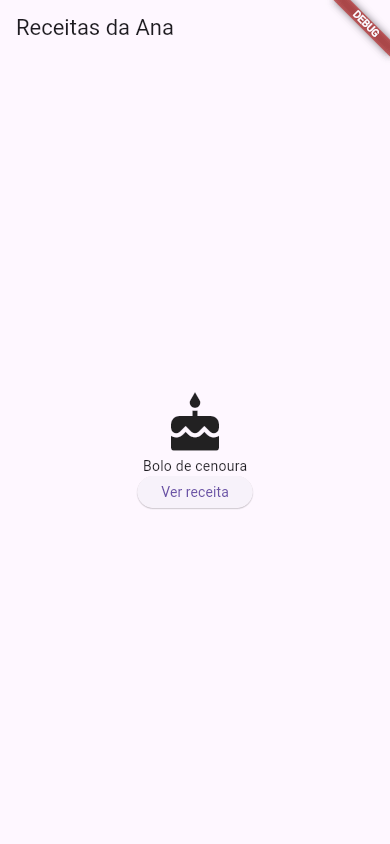
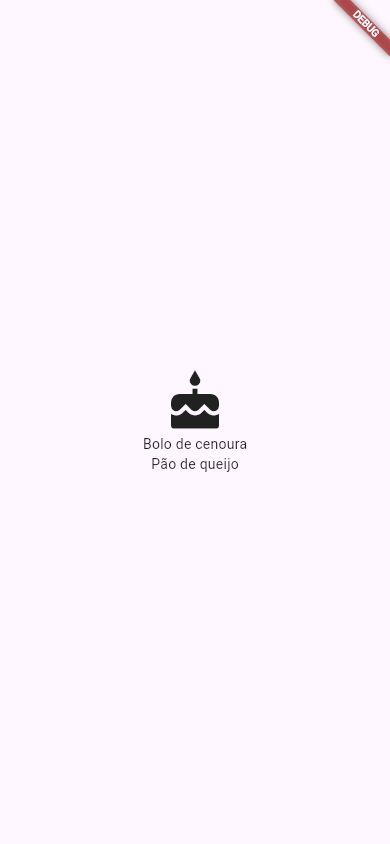
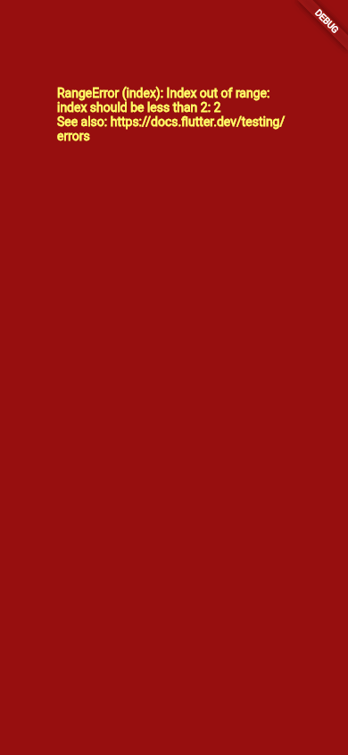

Tudo é Widget
Se você guardar uma única ideia de todo o Flutter, guarde esta: tudo o que aparece na tela é um widget, e os widgets se encaixam uns dentro dos outros. Um texto é um widget; um botão é um widget; o espaço em volta do botão, o alinhamento no centro, a coluna que empilha as coisas e a tela inteira também são. Entender essa árvore de peças é entender como qualquer tela do Flutter é feita.
- O que é um widget e o que é a árvore de widgets.
- Pai e filho: a diferença entre
child(um filho) echildren(vários). - Que até o alinhamento e o espaçamento são widgets.
- O método
build, que descreve a tela. - Por que os widgets não mudam (são imutáveis) e são reconstruídos.
- Os dois tipos de widget que você mesmo cria:
StatelessWidgeteStatefulWidget. - Os erros reais: uma lista no
childe a tela vermelha.
As telas desta aula foram fotografadas de um Flutter 3.47.7 de verdade (em modo debug, por isso a faixa DEBUG), e as mensagens de erro saíram da máquina da Ana.
A ideia: caixas dentro de caixas
Pense numa mudança. Você tem uma caixa grande escrita "cozinha". Dentro dela, uma caixa menor com "louça". Dentro dessa, um prato embrulhado em jornal. Cada caixa só sabe o que tem dentro dela, e cada uma pode conter uma coisa (o prato no jornal) ou várias (a caixa de louça, com vários pratos).
Os widgets são essas caixas. Um widget que contém outro é o pai (em inglês, parent); o de dentro é o filho (child). Alguns widgets têm um filho só (parâmetro child), outros têm uma lista de filhos (parâmetro children), e alguns não têm filho nenhum (um Text, um Icon): são as "folhas" da árvore.
1. Uma tela, uma árvore
A tela de uma receita, com um ícone, o nome e um botão:
import 'package:flutter/material.dart';
void main() {
runApp(const MaterialApp(home: TelaReceita()));
}
class TelaReceita extends StatelessWidget {
const TelaReceita({super.key});
@override
Widget build(BuildContext context) {
return Scaffold(
appBar: AppBar(title: const Text('Receitas da Ana')),
body: Center(
child: Column(
mainAxisSize: MainAxisSize.min,
children: [
const Icon(Icons.cake, size: 64),
const Text('Bolo de cenoura'),
ElevatedButton(
onPressed: () {},
child: const Text('Ver receita'),
),
],
),
),
);
}
}

A mesma tela, desenhada como árvore:
MaterialApp
└── home: TelaReceita
└── Scaffold
├── appBar: AppBar
│ └── title: Text('Receitas da Ana')
└── body: Center
└── child: Column
└── children:
├── Icon(Icons.cake)
├── Text('Bolo de cenoura')
└── ElevatedButton
└── child: Text('Ver receita')
- MaterialApp
- A raiz: o app no estilo Material. O filho dele fica no parâmetro
home(a tela inicial). - TelaReceita
- Um widget seu, criado com
extends StatelessWidget. Por dentro, ele é feito de widgets do Flutter: é assim que se constrói um app, juntando peças pequenas em peças maiores. - Scaffold
- O "andaime" da tela Material, com lugares com nome:
appBar(a barra de cima) ebody(o corpo). - Center → child
- Um widget de um filho: ele centraliza o que estiver no
child. - Column → children
- Um widget de vários filhos: empilha os itens da lista
children, de cima para baixo, na ordem da lista. - Icon, Text
- "Folhas": não têm filhos. Desenham alguma coisa.
- ElevatedButton → child
- Um botão também é um pai: o que vai escrito nele é o filho, um
Text. Poderia ser umIcon, ou umaRowcom ícone e texto.
Repare que a árvore no código e a árvore desenhada têm a mesma forma: a indentação do código mostra quem está dentro de quem. É por isso que a vírgula no fim de cada parâmetro e o formatador (dart format) importam tanto no Flutter.
2. Até o invisível é widget
Em muitas ferramentas, "centralizar" ou "dar um espaço" são propriedades de um componente (como no CSS: text-align: center, padding: 16px). No Flutter, são widgets que embrulham outros:
| Você quer | No Flutter, embrulhe com | Aula |
|---|---|---|
| Centralizar | Center(child: ...) | Center e Align |
| Um espaço em volta | Padding(padding: ..., child: ...) | Padding e Margem |
| Um tamanho fixo ou um espaço vazio | SizedBox(width: ..., height: ...) | SizedBox e Spacer |
| Empilhar na vertical ou na horizontal | Column / Row | Row e Column |
| Detectar um toque | GestureDetector(onTap: ..., child: ...) | Toques e Gestos |
Por isso a árvore de um app Flutter é funda: cada detalhe da tela é mais um nível de caixa. No começo, parece muito; com o tempo, vira um jeito muito previsível de montar telas, porque é sempre a mesma regra.
3. O build: a tela como descrição
Um widget não "desenha" nada sozinho. Ele é uma descrição: "quero um texto 'Bolo de cenoura' no centro". Quem lê a descrição e pinta os pixels é o Flutter.
Quando um widget seu precisa aparecer, o Flutter chama o método build dele e recebe de volta a árvore de widgets daquela parte da tela. Por isso o build devolve um Widget e só deve montar e devolver a árvore, sem fazer trabalhos demorados.
- @override Widget build(BuildContext context)
- "Construa": devolve a árvore de widgets que este widget representa.
- BuildContext context
- O "endereço" deste widget na árvore. Serve, por exemplo, para pegar o tema do app (
Theme.of(context)), como o contador doflutter createfaz.
Widgets não mudam: são trocados
Os widgets são imutáveis: depois de criado, um Text('Bolo') nunca vira Text('Torta'). Quando a tela precisa mudar (o contador aumentou), o Flutter chama o build de novo, recebe uma árvore nova e compara com a antiga, redesenhando só o que mudou. Criar widgets é muito barato, e é isso que permite reconstruir a tela dezenas de vezes por segundo. (É também por isso que os campos de um widget são final e que const ajuda: aula O Dart que Você Precisa.)
Além da árvore de widgets (a descrição), o Flutter mantém mais duas: a de elementos (que liga cada widget ao seu lugar na tela e guarda o estado) e a de objetos de renderização (que calcula tamanhos e pinta). Você não precisa mexer nelas para fazer apps; vale só saber que existem, porque aparecem nas mensagens de erro (RenderFlex, RenderBox...).
4. Os dois tipos de widget que você cria
StatelessWidget | StatefulWidget | |
|---|---|---|
| Quer dizer | "Sem estado" | "Com estado" |
| Muda sozinho? | Não: só mostra o que recebeu | Sim: guarda dados que mudam (um contador, um campo marcado) e se redesenha |
| Exemplo | A TelaReceita desta aula, um título, um cartão | O contador do flutter create, um formulário |
| Aula | StatelessWidget | StatefulWidget |
Regra prática: comece sempre com StatelessWidget; só passe para StatefulWidget quando algo na tela precisar mudar enquanto o app está aberto.
Experimente
Missão: a coluna tem dois filhos, o ícone e o bolo. Acrescente um terceiro filho na lista children: Text('Pão de queijo'), embaixo do bolo.
import 'package:flutter/material.dart';
void main() {
runApp(
const MaterialApp(
home: Scaffold(
body: Center(
child: Column(
mainAxisSize: MainAxisSize.min,
children: [
Icon(Icons.cake, size: 64),
Text('Bolo de cenoura'),
],
),
),
),
),
);
}
import 'package:flutter/material.dart';
void main() {
runApp(
const MaterialApp(
home: Scaffold(
body: Center(
child: Column(
mainAxisSize: MainAxisSize.min,
children: [
Icon(Icons.cake, size: 64),
Text('Bolo de cenoura'),
Text('Pão de queijo'),
],
),
),
),
),
);
}

Formas diferentes de montar a mesma tela
A mesma árvore pode ser escrita toda num build só, ou quebrada em widgets menores:
// Tudo junto: funciona, mas cresce rápido
body: Center(
child: Column(
children: [
const Icon(Icons.cake, size: 64),
const Text('Bolo de cenoura'),
],
),
),
// Quebrado em peças com nome
body: const Center(child: CartaoReceita(nome: 'Bolo de cenoura')),
No segundo jeito, CartaoReceita é um StatelessWidget seu, com o ícone e o texto dentro. Qual usar? Comece junto; quando um build passar de uma tela de altura, ou quando a mesma parte aparecer duas vezes, separe em widgets com nomes claros. Widgets pequenos são mais fáceis de ler, de testar e de reconstruir (aula StatelessWidget).
Quando dá errado
child
import 'package:flutter/material.dart';
void main() {
runApp(
const MaterialApp(
home: Scaffold(
body: Center(
child: [
Text('Bolo de cenoura'),
Text('Pão de queijo'),
],
),
),
),
);
}
$ flutter run -d web-server --web-port 8080
Launching lib/main.dart on Web Server in debug mode...
Waiting for connection from debug service on Web Server...
lib/main.dart:8:18: Error: The argument type 'List<Text>' can't be assigned to the parameter type 'Widget?'.
- 'List' is from 'dart:core'.
- 'Text' is from 'package:flutter/src/widgets/text.dart' ('../flutter/packages/flutter/lib/src/widgets/text.dart').
- 'Widget' is from 'package:flutter/src/widgets/framework.dart' ('../flutter/packages/flutter/lib/src/widgets/framework.dart').
child: [
^
Waiting for connection from debug service on Web Server... 27,5s
Failed to compile application.
- lib/main.dart:8:18:
- Linha 8, coluna 18: o
[depois dechild:. - The argument type 'List<Text>' can't be assigned to the parameter type 'Widget?'.
- "Uma
List<Text>(lista de textos) não cabe num parâmetro do tipoWidget?(um widget só, ou nada)". OCentertem um filho. - - 'List' is from 'dart:core'. ...
- De onde vem cada tipo citado. Ajuda quando dois pacotes têm classes com o mesmo nome; aqui, pode ignorar.
O flutter analyze (e o editor, ao vivo) acusam o mesmo, com mais uma dica por causa do const:
$ flutter analyze Analyzing lista_compras... error • A value of type 'List<Text>' can't be assigned to a parameter of type 'Widget?' in a const constructor. Try using a subtype, or removing the keyword 'const' • lib/main.dart:8:11 • const_constructor_param_type_mismatch error • The argument type 'List<Text>' can't be assigned to the parameter type 'Widget?'. • lib/main.dart:8:18 • argument_type_not_assignable 2 issues found. (ran in 9.1s)
Como consertar: para vários filhos, use um widget de vários filhos: Center(child: Column(children: [ ... ])). O contrário também acontece: Column(child: ...) dá erro, porque a Column não tem child, só children.
build
import 'package:flutter/material.dart';
void main() {
runApp(const MaterialApp(home: TelaReceita()));
}
class TelaReceita extends StatelessWidget {
const TelaReceita({super.key});
@override
Widget build(BuildContext context) {
const receitas = ['Bolo de cenoura', 'Pão de queijo'];
return Scaffold(
appBar: AppBar(title: const Text('Receitas da Ana')),
body: Center(child: Text(receitas[2])),
);
}
}
Este código compila, mas a lista tem 2 receitas (posições 0 e 1), e o build pede a posição 2. O erro acontece enquanto o Flutter monta a tela:

No modo debug, o Flutter troca o widget que falhou por uma tela vermelha com a mensagem em amarelo. Como quem falhou foi a TelaReceita inteira, sumiu tudo, até a barra de título. A explicação completa sai no console (o terminal do flutter run):
══╡ EXCEPTION CAUGHT BY WIDGETS LIBRARY ╞═══════════════════════════════════════════════════════════ The following IndexError was thrown building TelaReceita(dirty): RangeError (index): Index out of range: index should be less than 2: 2 The relevant error-causing widget was: TelaReceita TelaReceita:file:///home/ana/app/lib/main.dart:4:34 When the exception was thrown, this was the stack: « ... dezenas de linhas de dentro do Flutter; a que interessa é a do seu arquivo: package:app/main.dart 15:40 build « ... ════════════════════════════════════════════════════════════════════════════════════════════════════
- EXCEPTION CAUGHT BY WIDGETS LIBRARY
- "Exceção capturada pela biblioteca de widgets": o erro aconteceu ao montar widgets.
- The following IndexError was thrown building TelaReceita(dirty):
- "Este
IndexError(erro de posição) foi lançado ao construir aTelaReceita". O(dirty)("suja") quer dizer que ela estava marcada para ser construída. - RangeError (index): Index out of range: index should be less than 2: 2
- "Posição fora do intervalo: a posição deveria ser menor que 2, e foi 2". A mesma frase da tela vermelha.
- The relevant error-causing widget was: ... main.dart:4:34
- "O widget que causou o erro foi": a
TelaReceita, criada na linha 4 (norunApp). - package:app/main.dart 15:40 build
- No rastro, a linha do seu arquivo: linha 15, coluna 40, dentro do
build, onde está oreceitas[2]. As outras linhas do rastro são de dentro do Flutter.
(Esse app rodou como projeto app em /home/ana/app, e no Chrome: o rastro completo, que foi cortado acima, traz nomes de arquivos do compilador para a web. Num celular, ele muda, mas a primeira parte da mensagem é a mesma.)
Como consertar: use uma posição que existe (receitas[1]). No app final (modo release), a tela vermelha não aparece: o pedaço com erro fica cinza. Por isso nunca ignore uma tela vermelha no desenvolvimento.
Referência rápida
| Termo | O que é |
|---|---|
| Widget | Uma peça da tela, visível (Text, Icon) ou não (Center, Padding) |
| Árvore de widgets | Os widgets encaixados uns nos outros, da raiz (MaterialApp) às folhas |
child | O filho único: Center, Padding, ElevatedButton... |
children | A lista de filhos: Column, Row, Stack, ListView... |
build | O método que devolve a árvore de um widget |
| Imutável | Widget não muda: a tela muda com um build novo |
StatelessWidget / StatefulWidget | Widget sem estado / com estado que muda |
| Tela vermelha | Exceção durante o build, no modo debug; detalhes no console |
Exercícios
1. Um filho
Complete com o nome do parâmetro de filho único do Center:
2. Vários filhos
Complete com o nome do parâmetro da lista de filhos da Column:
3. No Flutter, como se centraliza um texto?
4. O contador aumentou. O que o Flutter faz com o widget Text('0') que estava na tela?
5. A tela ficou vermelha com uma mensagem em amarelo. Onde está a explicação completa?
Resumo
- Tudo na tela é widget, inclusive o invisível: centralizar, espaçar, empilhar.
- Os widgets formam uma árvore: pai e filho;
childpara um filho,childrenpara vários; folhas sem filhos. - A indentação do código mostra a árvore.
- O
builddevolve a descrição da tela; os widgets são imutáveis e, quando algo muda, a árvore é reconstruída. - Você cria widgets com
StatelessWidget(não muda) ouStatefulWidget(tem estado). - Lista no
childé erro de compilação; exceção nobuildvira a tela vermelha, com os detalhes no console.